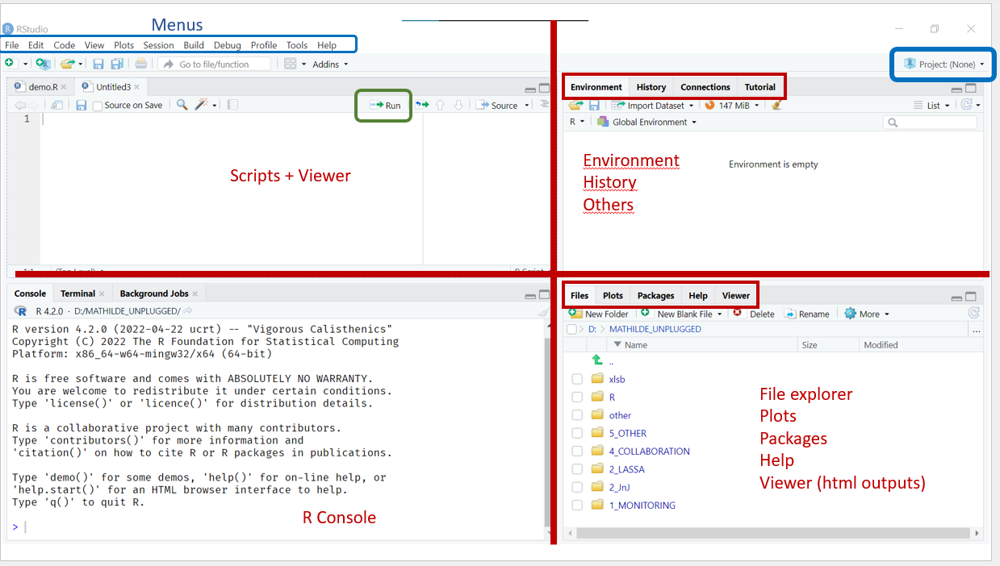
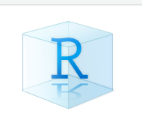
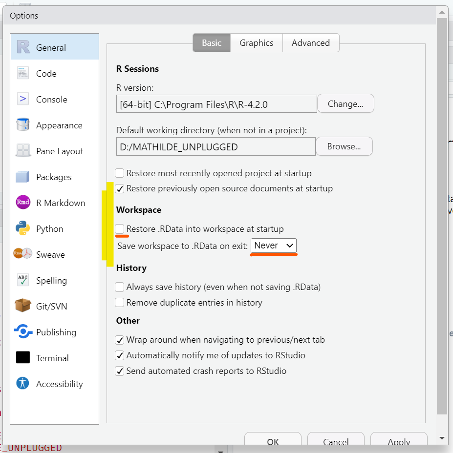

install.packages("here") # install the {here} packageImport data
Core
RStudio projects
Packages
Import data
Creating a Rstudio project, installing packages and importing data
Objectives
- Create a RStudio Project
- Set up an organized and well documented code
- Install and load packages
- Write robust file paths
- Import and inspect data
Important
The principles you learned in the Data Management module will apply here as well: we should do our best to ensure that our projects won’t just work today but can also be reused and shared in the future. While doing this is not always easy, there are several best practices that can help us, and one of the most important is to start with a good, organized code base.
Setting up your Project
Folder Structure
If not done already, download the course folder and save it to a location that is not connected to OneDrive.
OneDrive doesn’t play well with R as it will attempt to constantly synchronize certain project files in a way that can cause errors or memory problems.
This folder gives an example of a typical (and highly recommended) structure for your code projects:
- 📁 data
- 📁 clean
- 📁 raw
- 📁 R
- 📁 Rmd
- 📁 outputs
- README
This folder will be you working directory for all the sessions of this course. You will create an Rstudio project (explanations below) in it, and save all your scripts in /R. The course datasets are already in data/raw. Additionaly, there are a couple of resources (pdfs and links to online books) in the /resources subfolder.
Definitions
To better understand the concepts from the rest, you need to understand the two following concepts:
Working directory. The working directory is the location (folder) where your R session is actively working. If you save a file, for example, it will be saved into this folder by default. Similarly, when you want to open a file, this folder will be shown by default. All relative paths (which will be explained in Section 5.1) will be relative to this working directory.
Root. The root refers to the top-most folder level of the working directory. If your course folder was called FETCHR, the root would then be directly inside it (as opposed to being inside one of its subfolders like R or Data).
RStudio Projects
An RStudio Project can be used to make your life easier and help orient RStudio around the various files used in your code.
As a quick reminder, your interface should look something like this:

Open RStudio and create a new project by clicking File > New Project > Existing Directory > Browse, navigating into (opening) the course folder, and clicking Create Project.
In the Windows Explorer, look at the course folder. You should now see a new file with the extention .Rproj that has a small blue icon with an R in it.
Note
If you don’t see this file, it’s probably because it is hidden by default on your computer. To change this setting in Windows Explorer, go into the View menu and select Filename Extensions.

When you open an RStudio Project, RStudio will start a new R session, open the associated project files, and set your working directory to the root of the course folder. At this time, RStudio will also display the subfolders of this directory in the panel on the bottom right.
Tip
It is strongly recommended to set up a separate RStudio Project for each of your analyses to ensure that your project files remain orgnaized and managable.
There are several ways to open an RStudio Project, including:
- Using the RStudio menu
File > Open Projectand then selecting the relevant.Rprojfile - Clicking on the
Project: (none)button on the top right of the RStudio interface (see Figure 1) - Navigating in the folder explorer to the analysis folder and double clicking on the file with the
.Rprojextension
RStudio Options
Before continuing, let’s update some of RStudio’s problematic default settings:
Open the globabl options (Tools > Global Options) and open the tab General (left menu). Make sure that none of the boxes in the sections R Sessions, Workspace, or History are checked.

When checked, these options cause RStudio to save the objects in your environment and reload them as well as any files you previously had open when you open a new R session. While these default may seem like a good idea, it is better (especially as a beginner) to always start your work from a fresh, empty R session to avoid bugs.
Important
Remember that any commands or outputs that is needed for the cleaning and analysis should be saved explicitly in a script, in the correct, functional order.
Creating a New Script
Open a new script and save it in the R folder of your project under the name import_data.R.
Add some metadata to the top as seen in the first session using comments. Be sure to include:
- Title
- Author
- Creation Date
- Description
Now you’re ready to start coding!
Packages
Packages are collections of functions that extend the functionality of R. You’ll use them a lot, both in this course and in your daily life. Fortunately, as an open source language, R packages can be downloaded and installed for free from the internet.
Note
In R, packages are referenced using {}. For example ggplot2 is the name of the ggplot2 package that contains new plotting functions such as ggplot(), geom_point() etc…
Installation
We can install a new package using the function install.packages(), which downloads and installs it into the package library on your computer. This is done once per computer.
Important
Don’t forget to wrap the package name in quotation marks when using install.packages(). What happens if you don’t do this?
Note
To avoid any potential internet connectivity issues during the training, we already had you install most of the course packages (including the one in the example below).
If you have not installed the packages used in the course yet, you will have to manually do it each time you encounter a new package.
Usage
Once a package is installed we can use it but we have to specify to R that we will be using it every single session. This process is called loading the package and is achieved using the function library().
Use the library() function to load the packages here and rio, which will be used in Section 5.2.
Note
Based on your computer’s set up and the package you are trying to load, you may get a warning message noting that some functions have been masked or that the current version of the package was built for a different version of R. These messages are not usually a problem but are still important to note.
Try to run the following code. Can you work out what the error means?
library(ggplot)The above code throws an error because you have asked for a library that doesn’t exist. Remember that R is fickle and case sensitive and many of your errors will come from small typos in the names of functions or objects. Here, for example, we wanted to load the package ggplot2 but wrote ggplot instead.
Note
Most of the time, you’ll need to load a number of packages for your script and it is recommended to have a section at the start of your code that loads everything you’ll need in one place:
This practice makes it easy to tell which packages need to be installed to run a script.
Use comments to create a “Packages” section to your script.
Updating Packages
R has a very active community of developers and it’s pretty common for packages to be updated from time to time as their owners add in new functions and fix existing bugs. In order to update the packages in your library, you can go into the Packages tab of the bottom right panel and click Update. Don’t forget that you’ll need to be connected to the internet during this process.
Important
Sometimes packages are updated in a way that might remove or change a function that you used in some of your scripts, causing your code to no longer work. Don’t panic if this happens: it is always possible to go back and install an older version of a package if you need to. Details on how to do this are beyond the scope of this class, however, and we do note that the best practice is always to adapt your code rather than forcibly install an old version of a package.
Data Importation
Understanding File Paths
To open a file in R you need to provide a file path. A file path is simply a longer name for a file, that includes not only its name but also its location on your computer. There are several ways of defining these path, including absolute and relative paths.
Absolute Paths
Absolute paths are specific to your computer and create a file path that goes all the way up to the level of your harddrive. For example, an absolute path may look something like this: D:/OneDrive - MSF/Documents/MATHILDE/1_MONITORING/CHOLERA/data/raw/exemple_linelist.xlsx. Clearly, this path will only work on one computer.
The use of absolute paths is strongly discouraged as they would need to be changed every time your code is shared or the project folder is moved; if not, the code would no longer run properly.
Relative Paths
Relative paths are defined relative to your current working directory (Section 2.2). For example, keeping in mind that our handy .Rproj file will set our working directory to the root of our project folder; we could create a relative path that looked like data/raw/exemple_linelist.xlsx. This means that as long as we maintain the internal structure of our project folder and have an .Rproj file our code would theoretically run on multiple computers.
Note
Foreshadowing. File paths actually work a bit differently in Rmarkdown files than they do in R scripts, but this is something we will talk about much later in the course. If you don’t know what RMarkdown is at the moment, don’t worry about it.
Robust Paths
While using a combination of relative paths and an RStudio project has fixed a lot of our problems, there are still a couple remaining issues. One is that different operating systems interpret characters like /, \, and // differently, meaning the file paths described above (whether relative or absolute) may not work across multiple systems. Fortunately, we have a few options.
The first is to use the base R function file.path(), which will accept a set of the relevant parts (folders) in your desired path and combine them into a file path using the syntax of your local operating system, whichever it is:
file.path("data", "raw", "exemple_linelist.xlsx")[1] "data/raw/exemple_linelist.xlsx"Note that the path is relative, here to the current working directory
While file.path() works fine, the function here() (from the package here) works even better. One of the other outstanding problems with our relative path solution is that if ever we change our working directory during an R session the relative paths from our scripts will no longer be correct. here accepts a set of names in the same style as file.path() but will then use them to dynamically construct an absolute path adapted to your operating system and based on the location of your .Rproj file. In this course we strongly encourage you to use here() whenever you need to create a file path.
[1] "/Users/hugzsoubrier/GitHub/repicentre/data/raw/exemple_linelist.xlsx"Run the above code in the console. What file path does here("data", "raw") give you?
We will often want to source multiple data files in a single project. To make that process easier, it can be helpful to create a variable with the path to your raw (or clean) data.
Create a new section in your code called File Paths
Add the code to create an object called path_data_raw that contains the path to your raw data folder using the function here().
We can now pass our new variable path_data_raw back into here() in order to create a full path to a specific data file.
Using here() and path_data_raw, create a complete filepath for the file msf_linelist_moissala_2023-09-24.xlsx.
Note
here() simply creates a file path stored in a string, it doesn’t actually check if a file exists on your computer. What is more, any typos in the file or folder names will result in an error. If you would like to use a function to check if a file exists, check out file.exists() function.
Import function
In R different file formats are often imported using different, often specialized, functions. This can be tedious as it requires you to memorize and load a large number of functions just to get your data imported. To avoid this problem, we recommend that you use the import() function from the package rio. This function is able to open a large variety of files (including Excel, csv, Stata, and many others) by recognizing the file extension of your data and calling a relevant specialized function from another package so that you don’t have to. .
This type of function, providing an unified interface to other specific functions is known as a wrapper
Tip
To see the full list of all the file types you can load (and save!) with rio, check out their website and in particular the list of supported formats. In the rest of the lesson we will focus on importing data from Excel .xlsx files and .csv text files.
Note
Because import() is actually just calling other functions in the background, it is possible that it will need different arguments depending on the type of file you want to load.
Importing .xlsx files
From the First Sheet
In general, the usage of import() is pretty simple:
import(file = here(path_data_raw, "exemple_linelist.xlsx"))Notice that we have nested the command here() inside the import() command. Nesting functions is absolutely allowed in R and is something you will do all the time. When functions are nested, R will evaluate them in the order of the innermost function (in this case here()) to the outermost (in this case import()). In this way, the output of here() is being used as the input of import().
Import the file msf_linelist_moissala_2023-09-24.xlsx that is in your raw data subfolder into R using here() and import().
If your import worked correctly, R will print the data into the console but not save it into the environment because we have not assigned them to an object.
Tip
You may not want to have R print very large datasets into the console and assign them directly to an object.
Re-ipmort your data but this time save it to an object called df_linelist.
From Any Sheet
As you just saw, R selects the first sheet by default. It is however possible to pass the number (or name) of a specific worksheet in your Excel data to import() using the argument which:
import(file = here(path_data_raw, "exemple_linelist.xlsx"),
which = 2)
Note
The which argument is specific to the file types that have multiple sheets, such as an Excel or .Rdata file. If you try to use it on a .csv file the argument will be ignored.
Importing .csv files
We can import a .csv file in exactly the same way as an .xlsx file, we need only change the extension:
import(file = here(path_data_raw, "exemple_linelist.csv")).csv files sometimes use different delimiters and decimal characters depending on where the file comes from. You can indicate to import() which characters to use for these using the sep and dec arguments respectively:
import(file = here(path_data_raw, "exemple_linelist.csv"),
sep = ";",
dec = ",")Import the file msf_linelist_moissala_2023-09-24.csv from the raw data folder and store it in an object called df_linelist_csv.
Taking a Look at your Data
We have now imported a dataset into R and assigned it to a dataframe (df_linelist). The natural next step is to inspect this dataset, to check that the import went well, get to know it a bit better, and assess if it requires any cleaning before analysis.
Useful Functions
We can start by taking a quick look at the first few lines of the dataframe using the function head(). This function takes a dataframe as its first argument and optionally accepts a second argument n indicating the number of lines we would like to see.
head(df_linelist, n = 6)Actually, the default value of n is already 6, meaning our above code was equivalent to head(df_linelist).
You can check the default value of an argument (if it exists) by checking the documentation of a function. We well show you how to do this in a later session, but you can read a bit here if you are dying to know.
Use head() to examine the first 12 lines of df_linelist.
We can also use the functions we learned in the introduction session to learn more about the shape of our dataframe and the type of data it contains.
Using dim() and names(), check the dimensions and column names of df_linelist. Do these results match what you see when you open the data in Excel?
Use str() to check the data type of each column. Does anything look odd? Remember that you can also use functions like is.character() and is.numeric() if you’d like to test the type of a particular column.
The Environment
We can also check out our data by looking at the Environment tab of the top-right panel. Here, we can see our dataframe in the environment and look at its structure.
Click on the round blue button next to df_linelist in your environment to see its structure.
The Viewer
Click on the name of your dataframe in the Environment tab. This should open the dataset in a new tab in the same corner as your script (top left).
The Viewer displays dataframes as tables and is a convenient way to quickly look at your data. You can even sort and filter your data in the Viewer, though be aware that these actions will not make any changes to the actual object df_linelist. The Viewer can also be opened by using the function View().
Open df_linelist in the viewer using the function View().
Data Summaries
The function summary accepts a dataframe and is a handy way to get some quick statistics on each of the columns in a dataset:
summary(iris)Use summary() to inspect the minimum and maximum values for each column in df_linelist. Do you notice anything odd?
Make notes of types of data that you think is not correct and of values to check later, it will save you time in the next session.
Done !
Don’t forget to save your code!
If you want to learn about importing several sheets in one go, or several similar files from a folder, go to the satellite on multiple imports.
Resources
The
riowebsiteMore examples on importing data of various file types